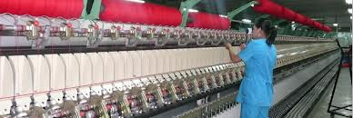

Processing Industry
The processing industry consists of wool, cashmere, leather, wood, metal, textile, and food production. The recession of the processing industry has stopped. The main cause of continued decline over the past decade in industrial production, in particular for the agricultural raw materials processing industries was a shortage of financial resources. These financial constraints led to the in ability of enterprises to secure raw materials, resulting in an under utilisation of capacity. A number of measures were taken by the Government to support industrial development. Several programs are under implementation. The processing of animal-originated raw materials such as leather, cashmere and wool is playing a dominant role in the processing industry.
Mongolia processes about 3.0 tons of cashmere, about 20 tons of sheep wool, around 2.0 tons of camel wool, more than 7.0 million skins in kind and produces more than 30 types of products and supplies to the domestic market as well as exporting dehaired cashmere, scoured wool, processed leather, knitwear, blankets carpets to more than 40 countries such as USA, European Union, China, Russian Federation, and Japan. One of the biggest companies of the wool and cashmere-processing sector is "Gobi" Shareholding Company. This company manufactures and exports more than 60 percent of the wool and cashmere processing sector.
 Textile production and its exports have been increased in the last years and it shares more than 10 per cent of total exports. Favourable trade conditions given to Mongolia from international organisations encourage exports of textile products. As a result, the export of knitted products has been increasing steadily. Around 20 per cent of knitting product exports is cashmere knitted products. The new metallurgical manufacture to produce products of international quality was established in 1995 with an annual production capacity of 140 tons. Although Mongolia is considered a country with scarce timber resources, the Government makes an appropriate effort to efficiently utilise these scant resources.
In 2006, the industrial growth has reached 8.4% with the net profit of 564.3 million USD, and the GDP per capita has exceeded 1000 USD due to the cutbacks of Mongolia’s foreign debts, and the price increases of raw materials and commodities on the global market. Wool and cashmere, leather, construction materials and metallurgic plants are considered as the key processing plants in Mongolia. Mongolia has a reserve of producing 7 million pieces of leather and hide products annually, of which, 52.4% or 3.6 million pieces are made of sheepskin, 26.2% or 1.8 million pieces - of goatskin, 7.1% or 0.4 million pieces - of cowhide, 4.7% or 0.3 million pieces - of horse hide, and 4.8% or 0.36 million pieces - of other animal skins.
Nationwide, there are 66 leather and hide processing plants, of which 71.2% is domestically invested.